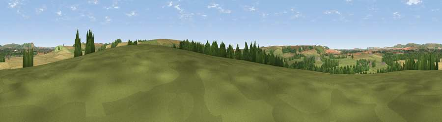

Viewpoint near Manningford Bohune
#30280 in England · top 58% of its area beats it · near Manningford BohuneThe view, rendered

A 360° render of this exact spot computed from the terrain model, tree cover and land cover — summer colours, afternoon light, calibrated against photographs of famous viewpoints. Real trees, hedges and buildings will differ in detail.
The panorama
Grey silhouette: terrain skyline in each direction (720 bearings, Earth curvature and refraction included). Dashed green: skyline with trees (+15 m) and buildings (+8 m) as obstacles. Blue strip: how far the ground is visible on each bearing.
Where the view opens
Wedge length = distance to the farthest visible ground on that bearing (vegetation-aware). Rings at 10, 25 and 50 km.
What fills the view
49% grassland · 39% cropland · 11% woodland · 1% built-up
Angular shares of the visible panorama (visual magnitude), not map area. Landscape diversity 0.44 (0–1 Shannon).
Key numbers
More beautiful places nearby
The staircase of upgrades: each row has a higher view potential than everything closer. Driving times are estimates from straight-line distance, calibrated against real road routing — check an actual route before setting out.
| Place | Direction | Drive | Score |
|---|---|---|---|
| Viewpoint near Upavon | SW · 3 km | ~6 min | 46.6 |
| Viewpoint near Pewsey | ENE · 3 km | ~8 min | 57.0 |
| Viewpoint near Milton Lilbourne | ENE · 5 km | ~12 min | 62.7 |
| Giant's Grave | NNE · 7 km | ~15 min | 69.9 |
| Viewpoint near Alton Priors | NNW · 8 km | ~16 min | 70.3 |
| Viewpoint near Oare | NNE · 8 km | ~16 min | 72.9 |
| Martinsell viewpoint | NNE · 8 km | ~17 min | 77.3 |
| Viewpoint near Berwick St John | SSW · 42 km | ~61 min | 78.2 |
51.30587, -1.79947 · source: screening · position refined by local search. Computed location — check access rights before visiting.